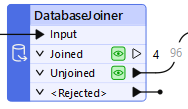
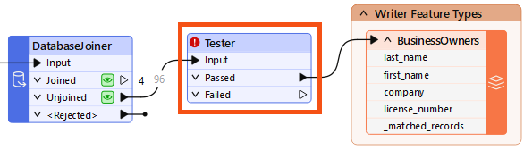
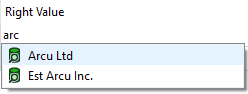
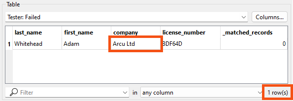
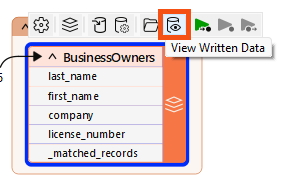
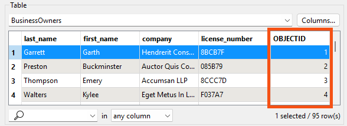

Learning Objectives
After completing this lesson, you’ll be able to:
- Design a workspace that uses filtering to create multiple data streams.
- Filter your data using a Tester transformer.
- Choose an output port feature cache to inspect.
Instructions
In this lesson, you will:
- Scroll down to read the text below.
- Complete the exercise by following the steps.
- Complete the Quiz toward the bottom of the page.
- Optional: Let us know if you found this lesson relevant to your role by filling out the survey at the bottom of the page.
- Click 'Next' to mark the lesson complete.
Resources
- Starting workspace
- C:\FMEData\Workspaces\IntegrateDataWithTheFMEPlatform\filter-data-by-attribute-values.fmw
- Complete workspace
- C:\FMEData\Workspaces\IntegrateDataWithTheFMEPlatform\filter-data-by-attribute-values-complete.fmw
- BusinessOwners.json
- C:\FMEData\Data\Planning\BusinessOwners.json
- revoked_licenses.csv
- C:\FMEData\Resources\IntegrateDataWithTheFMEPlatform\revoked_licenses.csv
Creating Multiple Streams of Data
FME workspaces send data from left to right across the canvas from reader feature types to writer feature types. The simplest workspace has only one “stream” of data: features are read in, processed the same way, and then written out. However, workspaces can have multiple data streams, splitting and merging features as required.
Did you find the correct transformer in the last exercise?
It was the DatabaseJoiner. Jennifer used it to join the features to the revoked_licenses table in the database, using the business license number as the key. The join created multiple streams in Jennifer's workspace when it split the features into Joined and Unjoined streams:

Jennifer connected the Unjoined port to the writer feature type because she wanted to retain features without a revoked business license.
If you didn't guess correctly, try to add the DatabaseJoiner now and see if you can configure it properly. Read the hints in the last exercise and the transformer documentation if you need help. Part of learning to use new transformers is trying things out for yourself; hopefully, you can add it successfully. If you get stumped, load the starting workspace for this exercise and inspect the DatabaseJoiner's parameters. Ensure you understand how it is configured before proceeding.
Multiple Solutions
Like most things in FME, this challenge has multiple solutions. The DatabaseJoiner is the most efficient solution, but you might have found a different transformer.
FeatureMerger or FeatureJoiner
The best runner-up solution is a PostGIS or PostgreSQL reader and a joining transformer. The FeatureMerger and FeatureJoiner work in this case. You can read the revoked_licenses table, join it to the source data, and use the unjoined ports to get the valid licenses. That's not a wrong solution, but it doesn't meet the goal of doing this all without adding an additional reader.
AttributeFilter
You could add an AttributeFilter and manually set it to remove the four revoked license values from the data. However, this approach has two problems:
- If the underlying data changes, you must update the workspace. The filter values in the AttributeFilter are hard-coded. You would have to edit this transformer to update the workspace to filter out newly revoked licenses, which would make the workspace inflexible.
- You must still add a PostGIS or PostgreSQL reader and read the revoked_licenses table. The goal here is not to have to add an additional reader.
- While it's not an issue in this scenario because the revoked_licenses table is small and only contains necessary data, using a reader would negatively affect workspace performance if you read from a larger table. FME would read the entire table and then look for matches in the source data. The DatabaseJoiner reads only the data needed for the join, making it a more efficient solution.
Tester or TestFilter
These filtering transformers have the same issue: if you want to use them alone to filter out the revoked licenses, you must hard-code the revoked license numbers into the test. There are more sustainable long-term solutions.
Scenario

For the next step in her workspace, Jennifer wants to add another filter to her data before FME writes it out. She needs to remove Arcu Ltd's business license. She can use a Tester transformer to do that.
1) Open FME Workbench
- Start FME Workbench (2026.1 or later).
- Open the starting workspace (C:\FMEData\Workspaces\IntegrateDataWithTheFMEPlatform\filter-data-by-attribute-values.fmw).
2) Add a Tester
- Add a Tester connected to the DatabaseJoiner's Unjoined port and the BusinessOwners writer feature type using Quick Add.
- We are filtering our features into two streams with the Tester.

- Before opening the Tester to configure it, let's use a trick to save time.
- Click the Run button.
- FME displays a warning dialog: "Incomplete Transformers."
- This dialog appears because the Tester has been added to the Canvas but is not configured yet. However, as you will see in a moment, we have a good reason to run.
- Click OK.
- The workspace runs, and FME creates data caches.
3) Configure Tester
- Double-click the Tester to open its Parameters dialog.
- The table here lets you enter a logical test or a series of tests against incoming features. It works a bit like an “if-then-else” statement in programming languages. If the feature meets the test criteria, it comes out of the Passed port. If it does not, it comes out of the Failed port. The Tester filters data and enables simple branching in your data integration workflow.
- Set the Tester parameters as follows:
| Logic |
Left Value |
Operator |
Right Value
|
| NOT |
company |
= |
Arcu Ltd |
- The reason we ran the workspace before configuring the Tester becomes apparent when we enter the value for Right Value. If the Tester has a data cache for the features entering the transformer, we can search the Cached Values to help choose the right one.
- Type "arc" into the field
- Notice the list of values that appears.

If you don't see values here, ensure you have both:
- Connected the DatabaseJoiner's Unjoined port to the Tester's Input port
- Run the workspace to get a data cache on the DatabaseJoiner
- Click Arc Ltd to enter it or use the arrow keys and Enter.
- These settings do the following: “For each feature being read by the Tester, if it does NOT have the value Arcu Ltd for the attribute 'company', it passes. Otherwise, it fails.” This test accomplishes our goal of sending that specific license to the Failed port.
- You can combine different Logic operators, like OR or AND, for more complex tests.
- Click OK to close the Tester dialog.
4) Run Tester
- Use Run to This on the Tester.
- Observe that 95 results exit the Passed port, and one exits the Failed port.
5) Inspect Filtered Data
We should inspect the Tester to ensure the correct features are filtered out.
- Click the Tester to select it.
- The Tester's Passed port data cache appears in Data Preview.
- This is because we have Toggle Automatic Inspect on Selection enabled (the button in the top-left corner of Data Preview). Data Preview always shows the top port with a cache when inspecting data this way.
- To see the data you filtered out instead, click the Tester's Failed data cache.
- Data Preview’s Table View reports that one row is displayed.
- Verify the company name is Arcu Ltd.

6) Inspect Final Results
Now that the workspace is complete,
- Click the Caching button on the toolbar (next to the Run button) to turn off data caching.
- You can run your final workspace without caching to ensure it runs as fast as possible.
- Click Run.
- The entire workspace runs successfully.
- Click the BusinessOwners writer feature type to select it.
- Click View Written Data.

- Observe that Data Preview shows the 95 valid records that were written to this feature class.
- Observe that FME automatically added the required OBJECTID column to the data as required by the geodatabase format.

- Click the writer feature types, then click the Open Containing Folder button to view the geodatabase in your file explorer.
- You could open the geodatabase in ArcGIS Pro from there.
Optional Challenge
Jennifer notices a problem. There is now a _matched_records attribute on her features. She doesn't want this to be written to the final data.
Follow along with Jennifer’s steps above, and then use one of the techniques covered earlier in the course to ensure that _matched_records is not written. You have a few options:
- Use the AttributeManager after the DatabaseJoiner and remove _matched_records
- You'll also have to update the DatabaseJoiner because the attribute names it uses will have changed
- Switch the BusinessOwners writer feature type Attribute Definition mode back to Manual, and then remove _matched_records
- Use an AttributeRemover transformer before writing to remove _matched_records
For an extra challenge, find and add a transformer to order features alphabetically by the value of last_name.
Learn More
Leave Us Feedback on This Lesson